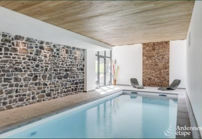

De huizen
 1. Maredsous (omheind buitenzwembad)
1. Maredsous (omheind buitenzwembad)€2.134 voor 2 nachten · 185 km
Uitchecken zo voor 20u
 2. Le Bercail (Somme-Leuze)
2. Le Bercail (Somme-Leuze)€1.792 voor 2 nachten · 220 km
Uitchecken zo voor 10u

3. Maredsous (binnenzwembad)€1.782 voor 2 nachten · 182 km
Uitchecken zo voor 17u
 4. Paliseul
4. Paliseul€2.268 voor 2 nachten · 246 km
Uitchecken zo voor 20u
 5. Gesves (luxevilla)
5. Gesves (luxevilla)€1.822 voor 2 nachten · 197 km
Uitchecken zo voor 20u
 6. Hastière (Dinant)
6. Hastière (Dinant)€1.766 voor 2 nachten · 197 km
Uitchecken zo voor 20u